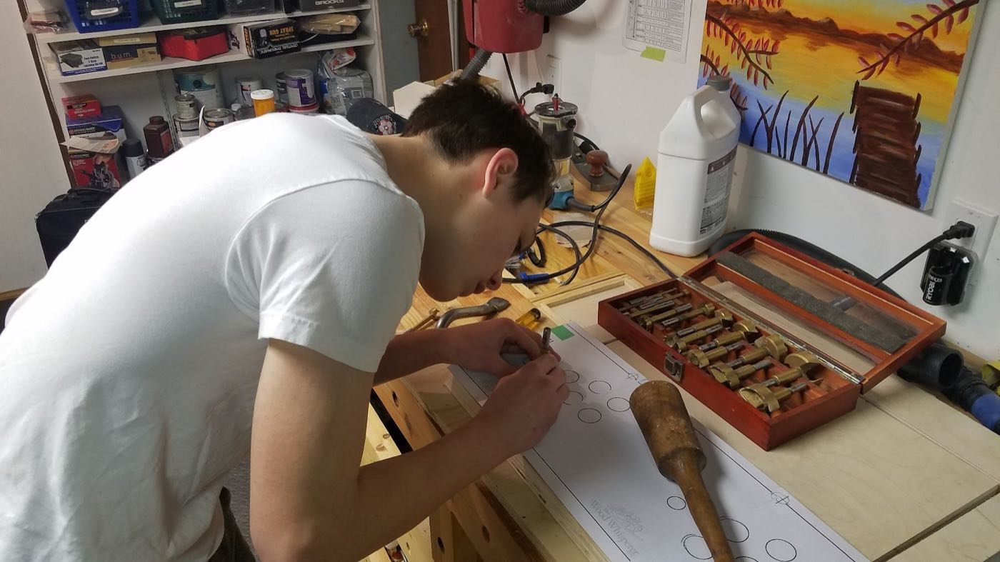
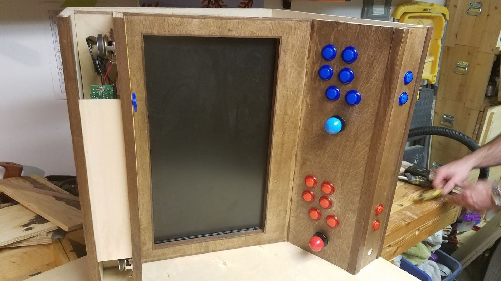
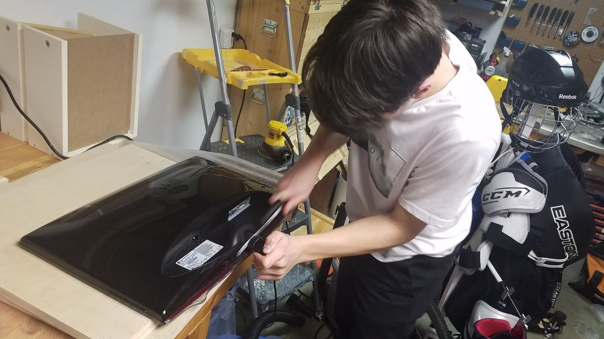
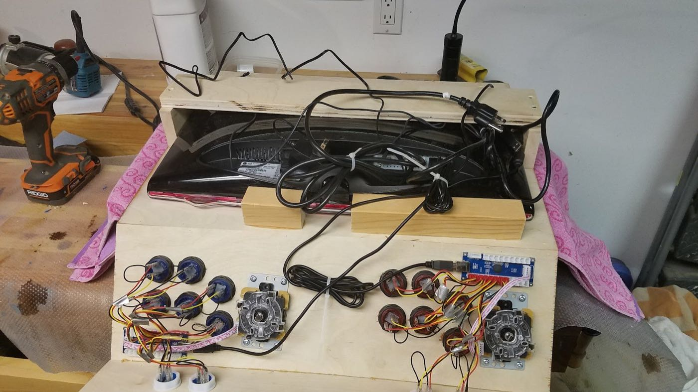
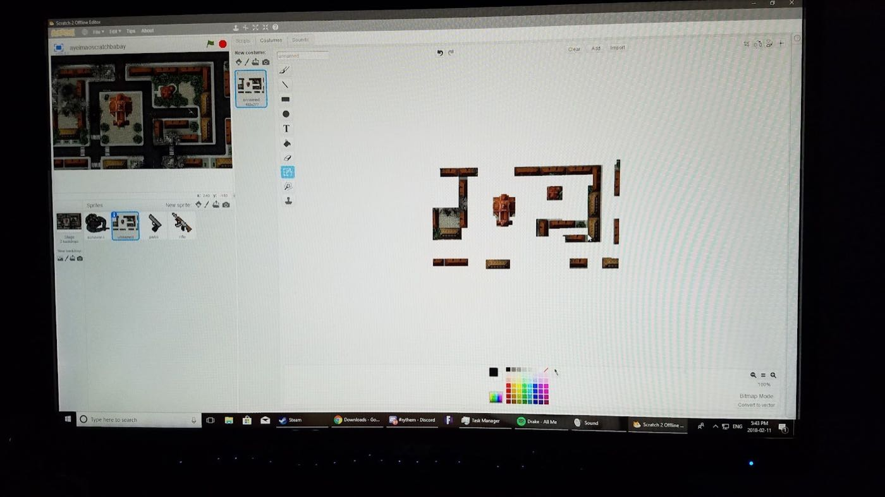
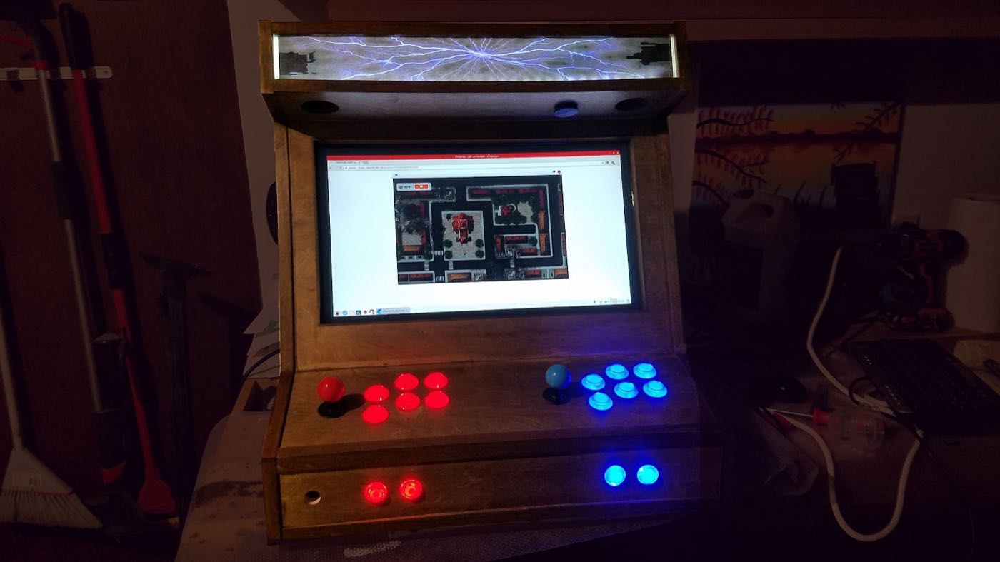

Overview
This project was my first real foray into electronics and programming. For a school project, I decided to build a custom arcade machine around a Raspberry Pi. I built it for my dad, since the RetroPie software can emulate thousands of the retro arcade games he grew up playing and hadn't had an authentic way to play since his childhood. I also wanted to design my own simple game for the cabinet, to learn more about game development and programming in general.
Building the cabinet
The project started with a wooden arcade cabinet plan I found online, and buying the Raspberry Pi, related components and monitor. I then sourced the wood for the cabinet with my dad. Building it taught me a lot of woodworking, including how to use a table saw, drill press, jigsaw, router, scroll saw, band saw and many other standard tools. I finished the exterior with a planer, sander and stain for a smooth, clean look.


Next, I installed the controls and electronics in the cabinet, mounted the Raspberry Pi and monitor, wired up and configured the buttons and joysticks, and loaded RetroPie onto the Pi.


The game
I built my own game on a dual boot of the regular Raspberry Pi OS: a simple top-down zombie shooter with a points system and a leaderboard for the most kills before dying.


Overall, I achieved everything I'd hoped to with this project, and the cabinet is still in my dad's office today. I still sometimes hear him playing throughout the day while I'm studying, and it's very rewarding knowing I could give him something he enjoys so much.